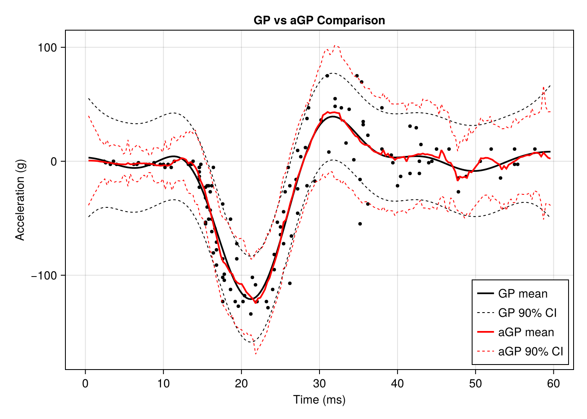

Motorcycle Crash Test Example
This example demonstrates fitting both a full GP and local approximate GP (aGP) to the classic motorcycle crash test dataset, reproducing results from the R laGP package.
Overview
We will:
- Fit a full GP to the mcycle dataset (133 observations)
- Compare with local approximate GP (aGP) predictions
- Scale to a larger dataset using fixed hyperparameters
The mcycle dataset contains head acceleration (g) measurements at various times (ms) after a simulated motorcycle crash.
Setup
using laGP
using Distributions
using Random
using CairoMakieDataset
The mcycle dataset from the MASS R package contains 133 observations:
# Embedded mcycle dataset (times in ms, acceleration in g)
X = reshape(mcycle_times, :, 1) # 133 x 1 design matrix
Z = mcycle_accel # 133 response values
println("Motorcycle Crash Test Data")
println(" Observations: ", length(Z))
println(" Time range: ", minimum(X), " - ", maximum(X), " ms")
println(" Accel range: ", minimum(Z), " - ", maximum(Z), " g")Data-Driven Parameter Initialization
Use darg and garg to get sensible parameter ranges:
# Get data-driven parameter ranges
da = darg(X)
ga = garg(Z)
println("Data-driven parameter ranges:")
println(" d: start=", round(da.start, digits=4),
", min=", round(da.min, digits=4),
", max=", round(da.max, digits=4))
println(" g: start=", round(ga.start, digits=4),
", min=", round(ga.min, digits=6),
", max=", round(ga.max, digits=4))Full GP with Joint MLE
Fit a full GP and optimize both lengthscale (d) and nugget (g):
# Create GP with data-driven initial values
gp = new_gp(X, Z, da.start, ga.start)
# Joint MLE for both d and g
result = jmle_gp(gp; drange=(da.min, da.max), grange=(ga.min, ga.max))
println("MLE results:")
println(" d = ", round(gp.d, digits=4))
println(" g = ", round(gp.g, digits=4))
println(" iterations = ", result.tot_its)Local Approximate GP (aGP)
The agp function builds local GP models at each prediction point using nearest neighbors:
# Prediction grid
xx = collect(range(minimum(X) - 2, maximum(X) + 2, length=200))
XX = reshape(xx, :, 1)
# Run aGP with MLE for both d and g
# Use NamedTuples to enable MLE optimization at each prediction point
d_agp = (start=da.start, min=da.min, max=da.max, mle=true)
g_agp = (start=ga.start, min=ga.min, max=ga.max, mle=true)
pred_agp = agp(X, Z, XX; endpt=30, d=d_agp, g=g_agp, method=:alc, verb=0)
println("aGP prediction complete")
println(" Test points: ", length(xx))
println(" Local neighborhood size: 30")Comparison: Full GP vs aGP
# Full GP predictions
pred_full_gp = pred_gp(gp, XX; lite=true)
# 90% credible intervals
z_90 = quantile(Normal(), 0.95)
# Full GP intervals
gp_lower = pred_full_gp.mean .- z_90 .* sqrt.(pred_full_gp.s2)
gp_upper = pred_full_gp.mean .+ z_90 .* sqrt.(pred_full_gp.s2)
# aGP intervals
agp_lower = pred_agp.mean .- z_90 .* sqrt.(pred_agp.var)
agp_upper = pred_agp.mean .+ z_90 .* sqrt.(pred_agp.var)Visualization
fig = Figure(size=(700, 500))
ax = Axis(fig[1, 1],
xlabel="Time (ms)",
ylabel="Acceleration (g)",
title="GP vs aGP Comparison")
# Data points
scatter!(ax, vec(X), Z, color=:black, markersize=6)
# Full GP: black solid mean, black dashed CIs
lines!(ax, xx, pred_full_gp.mean, color=:black, linewidth=2, label="GP mean")
lines!(ax, xx, gp_lower, color=:black, linewidth=1, linestyle=:dash, label="GP 90% CI")
lines!(ax, xx, gp_upper, color=:black, linewidth=1, linestyle=:dash)
# aGP: red solid mean, red dashed CIs
lines!(ax, xx, pred_agp.mean, color=:red, linewidth=2, label="aGP mean")
lines!(ax, xx, agp_lower, color=:red, linewidth=1, linestyle=:dash, label="aGP 90% CI")
lines!(ax, xx, agp_upper, color=:red, linewidth=1, linestyle=:dash)
axislegend(ax, position=:rb)
fig
The full GP (black) and aGP (red) predictions are nearly identical for this dataset size. The aGP approach becomes advantageous for larger datasets where full GP computation is prohibitive.
Scaling to Larger Datasets
When scaling to larger datasets, use fixed hyperparameters from the original MLE rather than re-optimizing. This matches the R laGP approach and prevents overfitting:
# Replicate data 10 times with jitter on X
Random.seed!(42)
n_rep = 10
X_big = repeat(X, n_rep) .+ randn(n * n_rep) .* 1.0 # Jitter on X (sd=1)
Z_big = repeat(Z, n_rep) # No noise on Z
println("Enlarged dataset:")
println(" Observations: ", length(Z_big)) # 1330 observations
# aGP with FIXED hyperparameters from the full GP MLE
# This matches R: aGP(X, Z, XX, end = 30, d = d, g = g, verb = 0)
pred_agp_big = agp(X_big, Z_big, XX; endpt=30, d=gp.d, g=gp.g,
method=:alc, verb=0)Visualization
fig2 = Figure(size=(700, 500))
ax = Axis(fig2[1, 1],
xlabel="Time (ms)",
ylabel="Acceleration (g)",
title="aGP on Enlarged Motorcycle Data (n=1330)")
scatter!(ax, vec(X_big), Z_big, color=(:gray, 0.3), markersize=4,
label="Data (10x replicated)")
lines!(ax, xx, pred_agp_big.mean, color=:red, linewidth=2, label="aGP mean")
# 90% credible intervals
agp_big_lower = pred_agp_big.mean .- z_90 .* sqrt.(pred_agp_big.var)
agp_big_upper = pred_agp_big.mean .+ z_90 .* sqrt.(pred_agp_big.var)
lines!(ax, xx, agp_big_lower, color=:red, linewidth=1, linestyle=:dash, label="aGP 90% CI")
lines!(ax, xx, agp_big_upper, color=:red, linewidth=1, linestyle=:dash)
axislegend(ax, position=:rb)
fig2
Key Concepts
Fixed vs Adaptive Hyperparameters
When using agp with a NamedTuple like (start=..., min=..., max=..., mle=true), MLE optimization runs at each prediction point. This is appropriate for the original dataset.
For enlarged/replicated datasets, pass fixed scalar values (d=gp.d, g=gp.g) to use hyperparameters estimated from the original data. This:
- Prevents overfitting to artificial replication structure
- Matches the R laGP approach
- Produces smoother predictions
aGP Parameters
endpt: Maximum local neighborhood size (default 50)method: Acquisition function for neighbor selection:alc- Active Learning Cohn (reduces predictive variance):mspe- Mean Squared Prediction Error:nn- Simple nearest neighbors
verb: Verbosity level (0 = silent)
When to Use aGP
- Large datasets: O(n) per prediction vs O(n³) for full GP
- Non-stationary functions: Local models adapt to local structure
- Streaming data: Can update local neighborhoods efficiently